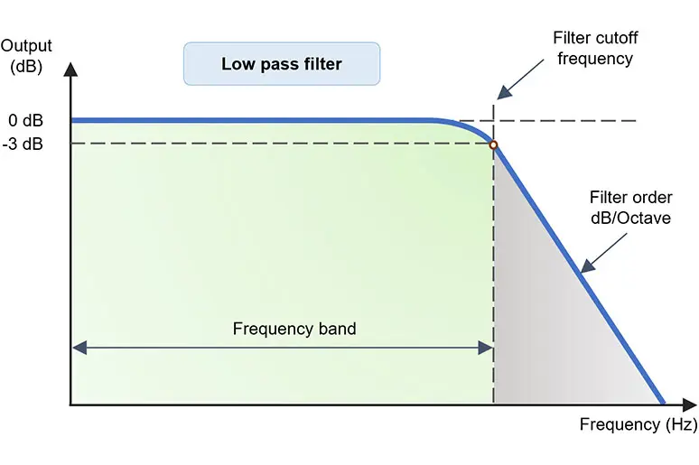
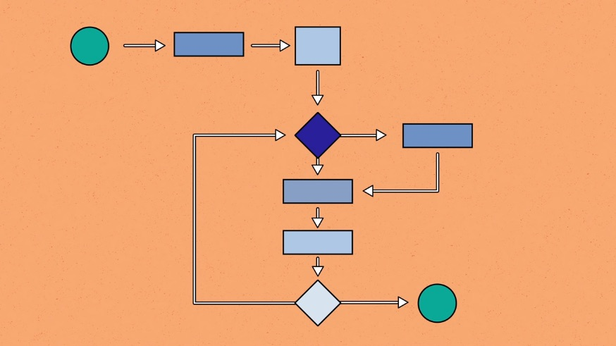
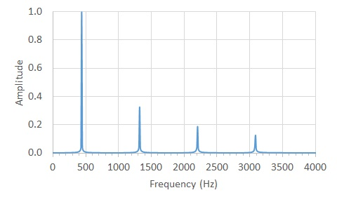
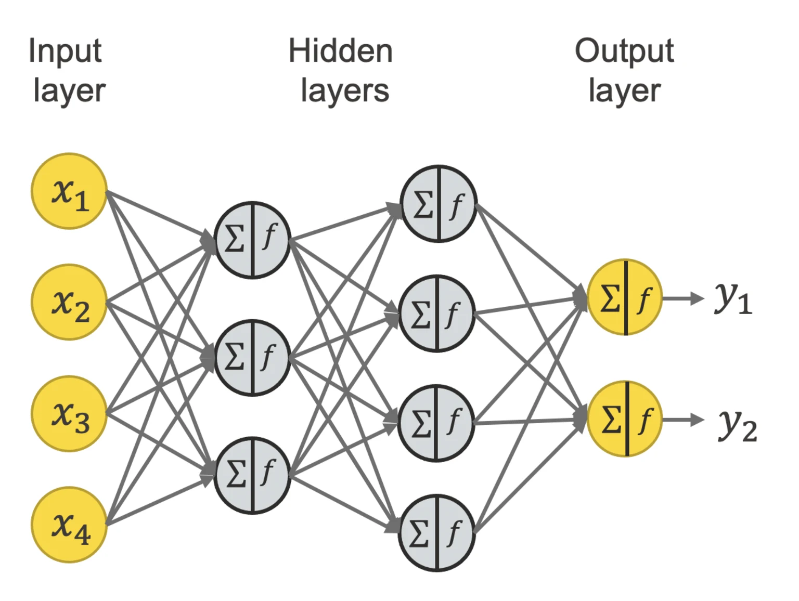
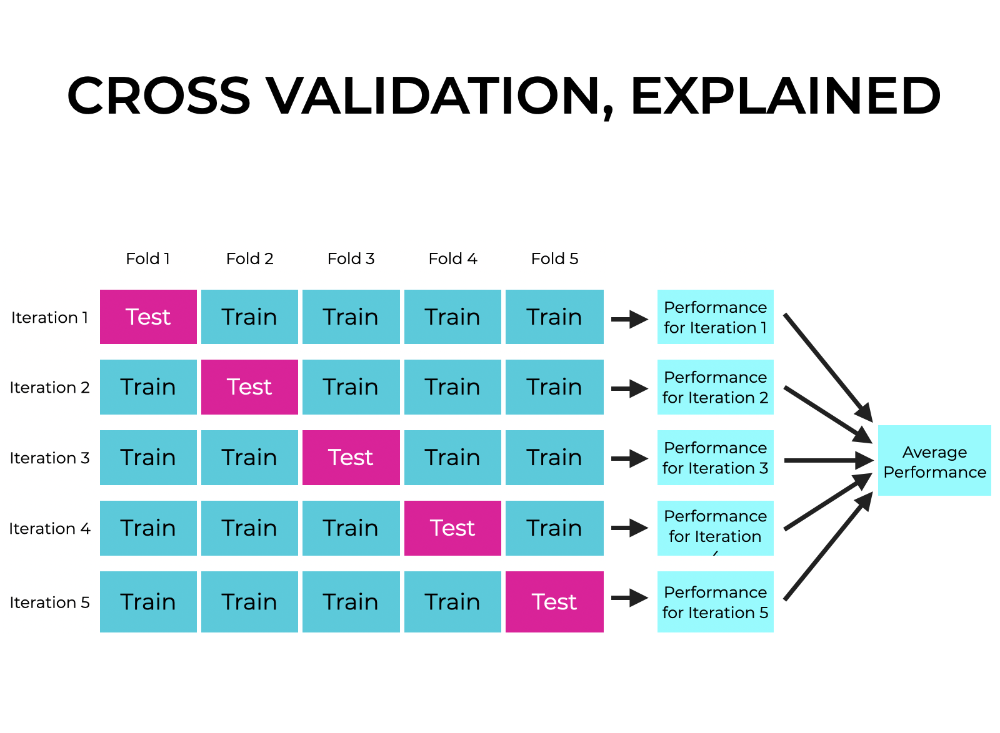
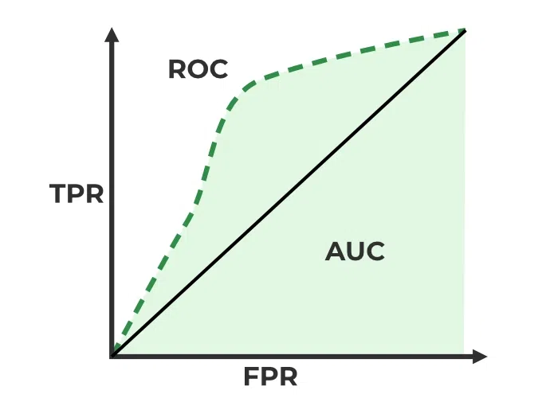

Below is the detailed procedure used for the CSI Fall Detection project.
| Step | Description | Image |
|---|---|---|
| 1 | Prepare the data by merging the label and activity data files from the UT-HAR dataset. | |
| 2 | Apply various filter techniques (Butterworth Low-Pass, Hampel, Discrete Wave Transform) to the data for denoising. |  |
| 3 | Implement the sliding window algorithm to segment fall events. |  |
| 4 | Extract features from the segmented data using the time, frequency, and time-frequency domains. |  |
| 5 | Input the data into a machine learning algorithm for training and prediction. |  |
| 6 | Run cross-validation to ensure good performance metrics. |  |
| 7 | Evaluate each model/algorithm on various metrics and determine the best-performing. |  |